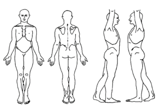

HN: PT:
Name: Age: Gender:
Birth Date: Therapist:
Name: Age: Gender:
Birth Date: Therapist:
PHYSICAL THERAPY ASSESSMENT AND TREATMENT PLAN FOR ORTHOPEDIC
BP(mmHg) PR(bpm) RR(rpm)
T(°C) O2sat(%) BW(kg)
Chief complaint:
History of illness:
Precaution:
Operation:
Laboratory/Radiology Results:
Observation:
Palpation:

AROM:NormalLimit at
PROM:NormalLimit at
Sensory:IntactImpairedLoss at
PROM:NormalLimit at
Sensory:IntactImpairedLoss at
Others:
Fall risk assessment Total Score=
Low risksHigh risks
Pain assessment Does patient have pain? NoYes Location
Duration:IntermittentConstant
Characteristic of pain:PrickSharpDull
BurningCollicOthers
Frequency:Less than dailyDailyAll the time
Pain re-assessment score
Assessment tool:NIPSFLACCFACESNRS
PT diagnosis/Impression:
Goal of treatment: Long term goal
Short term goal
Plan of treatment and procedure
Instruction:
Patient and/or family was given and understood about instruction and plan of treatment
Need reviewed
PT's signature: Date: Time: